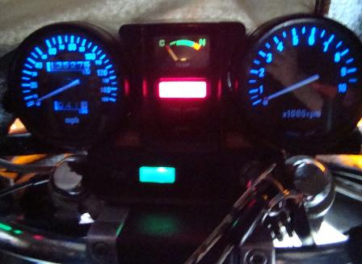
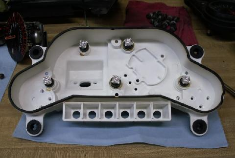
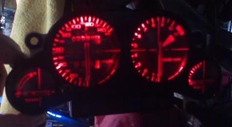

Gauge Cluster Lights
The stock bulbs for the Magnas are #74 bulbs for the idiot lights - #194 for the speedo/tach
Magna LED Gauge Cluster Lights
The stock gauge cluster bulbs can be changed to LED bulbs:
LEDs from http://www.superbrightleds.com/1157.htm.
You will need the following: idiot lights are T 1 1/2 (#73/74) miniature LED bulbs
- 3 white (two for the tach, 1 for the LCD)
- 2 red (Taillight and Oil)
- 1 blue (high beam)
- 1 green (neutral)
- 2 yellow (turn signals)
2 blue (5 LED Angled style) (speedo/tach) #194 bulb
The low fuel bulb must be replaced with a regular filament bulb. The sensor merely increases resistance when it is submerged in gasoline... and the LED bulb will light fully even if the tank is full and there's almost no voltage at the socket.
Some say the Tach and Speedo lights must use the regular filament bulb as the LED's aren't bright enough.
Don't use white bulbs for all the idiot lights because the white bulbs are actually slightly blue. The turn signals look brownish instead of amber, the reds look washed out, and the green neutral light looks turquoise.
LED bulbs installed

The left gauge(speedo) is using the 5 angled bulb while the right gauge(tach) is using the 5 forward bulb
Interceptor LED Gauge Cluster Lights
The Interceptor uses 11 #74 bulbs for the Idiot Lights. No info on the larger 5 stock bulbs for the Speedo/Tach. However, it's been said that the Stanley #158, standard interior light bulb is a direct fit for the 5 stock bulbs.
One owner replaced his 5 large bulbs with LEDs. He had to scrounge socket bases from an '84 VFR to use the 194 bulb as they don't fit the OEM socket.

LED bulbs installed
